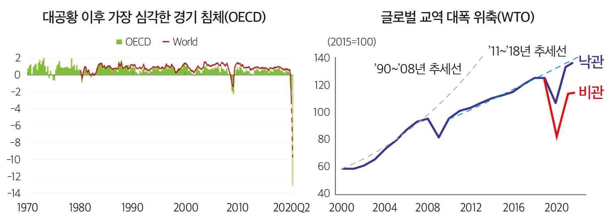
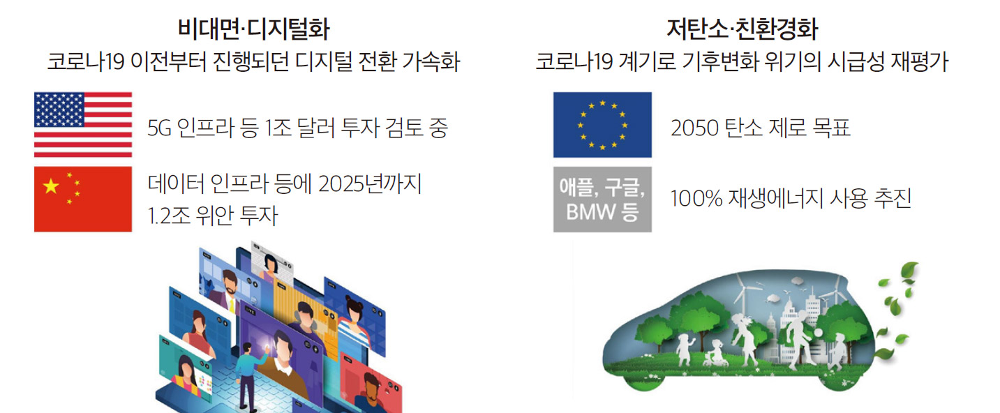

코로나19의 파급 효과는 지방공기업이 운영하고 있는 사업 분야에도 직·간접적인 영향을 미치고 있다. 공공 서비스에도 사회환경 변화에 대한 검토가 필요한 시점에서 지방공기업은 경제 체제의 대전환에 기여하는 뉴딜 사업을 기획·실행하기에는 어려움이 따를 수 있다. 이에 뉴딜의 기본 개념 및 구조적 특징, 추진 사례를 살펴보고, 주요 착안사항을 논의해봄으로써 향후 지방공공기관의 뉴딜사업 기획 시 고려해야 할 사항을 검토해본다.
한국판 뉴딜 정책 전개의 배경
코로나19에 따른 경제·사회적 위기는 전 세계에 영향을 끼치는 공통된 상황이며 그 영향은 지역 주민의 삶의 방식에 전면적인 영향을 주고 있다는 사실도 동일하다. 특히 코로나19의 확산은 노동력 감소와 불확실성 증가로 인해 투자 및 생산 활동의 감소로 이어졌다. 그리고 이는 경제에 직접적으로 나쁜 영향을 미치고 있다.
코로나19에 따른 경제적 충격은 산업과 업종, 지역에 따라 다르게 나타나고 있어 정책적인 대처에 어려움이 발생하는 점은 다른 공통점으로 볼 수 있다. 지난해에 수행된 코로나19의 경제적 영향에 대한 연구를 살펴보면, 세계 경제에 영향력이 큰 국가마저 업종별 영향이 다름을 알 수 있었다. 중국의 경우는 여행과 영화, 엔터테인먼트 산업이 가장 많은 경제적 피해를 입은 산업이었고, 이탈리아는 건설업과 숙박업, 여가활동 관련 산업이 경제적 손실이 큰 분야라는 분석이 있었다1).
코로나19의 파급 효과는 지방공기업이 운영하고 있는 사업 분야에도 직·간접적인 영향을 미치는 것으로 파악되고 있다. 우선 지방공기업은 사업 분야에서 역할을 확대・강화하기 위해서 기존 사업을 비대면 사업(Uncontact business)으로 전환하고 있다. 신규 사업의 경우에는 비대면 가능 여부를 사전에 검토·반영하는 등 공공 서비스에도 환경 변화의 적용 가능성에 대한 검토 여부가 필수적이다. 또한 공공 서비스를 제공하는 과정에서 안전과 신뢰 확보를 위해 재난안전 대응 체계의 정비와 업무 프로세스의 개선은 필수가 되었다. 내부적으로는 조직 구조 등 하드웨어 부분에 대한 재구축을 검토해야 한다.
이러한 사회환경의 변화에 맞춰 2020년 7월 정부는 코로나19로 인한 사회·경제 분야 대전환에 대응하고, 선도국가로의 도약을 추진하기 위해 “한국판 뉴딜” 정책을 발표한 바 있다. “한국판 뉴딜” 정책은 그린(green) 경제 확산, 디지털 혁신을 통해 글로벌 패러다임 선도, 국민 안전망을 강화하여 경제 회복과 복지 증진을 함께 추구하는 국가 경제 체제 전환을 목표로 하고 있다. 특히 전 국가적 성과의 공유, 지속가능성을 위한 대전환이라는 당위성 측면에서 이견없이 적극적으로 확산되고 있다.
다만, 정부와 지자체, 국가공기업의 경우와 달리 지방공공기관은 사업의 지리적 범위와 재정 여건상 경제 체제의 대전환에 기여하는 뉴딜 사업을 기획·실행하기에는 어려움이 따를 수 있다. 그래서 본 고에서는 뉴딜의 기본 개념 및 구조적 특징, 추진 사례를 살펴봄으로써 정책 이해도를 제고하고, 주요 착안사항을 논의함으로써 향후 지방공공기관의 뉴딜사업 기획 시 고려해야 할 사항을 검토해보고자 한다.
[그림 1] 코로나19로 인한 글로벌 경제의 변화

출처 : 대한민국 관계부처합동(’20.7.14), 「한국판 뉴딜 국민보고대회」
[그림 2] 코로나19 이후 경제·산업의 변화 방향

출처 : 대한민국 관계부처합동(’20.7.14), 「한국판 뉴딜 국민보고대회」
뉴딜 정책의 이해를 위한 개념적 특징
제1차 세계대전 이후 지속된 대공황 속에서 취임한 미국의 루즈벨트(Franklin Roosevelt) 대통령은 정부가 대규모 재원을 동원해 경제에 지속적으로 개입하는 뉴딜(New Deal) 정책을 추진하였다. 주식시장의 상황과 물가수준을 포함하여 볼 때 차이점은 존재하지만, 지금의 세계경제 상황이 1930년대 초 경제공황의 전조가 보이던 시기와 유사한 측면이 있다. 즉 상당수의 국가에서 경제성장이 정체되는 반면, 그동안 진행되어온 생산 자동화의 여파로 일자리의 위기가 심화되고 있다. 또한 양질의 일자리 손실로 중산층이 감소되고 있다. 선진국과 개발도상국 모두 소득 분배 악화와 내수 위축을 경험하고 있으며, 시장 확보를 위한 무역 경쟁이 격화2)되었다는 측면이 있다.
1930년대 미국에서 추진된 뉴딜 정책의 구성 요소와 특징, 조합을 살펴보면 한국판 뉴딜 정책의 기본방향을 이해하는 데 도움이 된다. ‘뉴딜’은 미국 제28대 대통령인 우드로 윌슨(Woodrow Wilson)이 주창한 ‘새로운 자유(New Freedom)’와 시어도어 루즈벨트(Theodore Roosevelt)가 내건 ‘공정한 협약(Square Deal)’이 연계되었다고 이해되고 있다. 우드로 윌슨 대통령은 ‘새로운 자유’ 정책을 추진하며 보호무역에서 자유무역으로의 대전환을 이루었으며, 시어도어 루즈벨트 대통령은 기업계와 노동계가 협약을 통해 사회경제적 문제를 완화하는 한편 이 과정에 정부가 개입하여 역할을 수행할 수 있도록 ‘공정 협약’을 정책적으로 추진하였다. 이는 정부가 대외 경제정책의 대전환과 함께 국내 경제 문제 해결에 다양한 경제 주체가 참여하여 시대적 전환을 이룰 수 있도록 했다는 데에 특징이 있다. 그래서 ‘뉴딜’은 새로운 대책, 새로운 협약이라는 의미를 담게 되었고, 대규모 재정 투입을 통해 △산업질서와 경제의 회복(Recovery), △근본적인 제도 개혁(Reform), △빈곤과 실업으로부터의 구제(Relief)라는 3R을 기본 구성요소로 지향하게 되었다. 3R은 한국판 뉴딜에서도 나타나는 특징으로, 그린 뉴딜과 디지털 뉴딜을 통한 산업질서 및 경제 회복과 함께 국민 안전망을 강화함으로써 포용적 성장을 실현하는 것에 방향을 두고 있는 것이다.
한국판 뉴딜 대표 과제와 주요 사례
한국판 뉴딜 정책은 디지털과 그린, 그리고 융합적 과제가 공존하여 대표 과제를 제시해 방향성을 제공함으로써 주체별 추진을 용이하게 하고 있다. 10대 대표 과제가 선정된 근거로는 다음과 같은 5개의 기준이 있다. 첫째, ‘경제 활력 제고 등 파급력이 큰 사업’으로 경제 성장에 중점을 두고 산업 파급성이 뛰어난 사업들이 해당된다. 둘째, ‘지역 균형 발전 및 지역 경제 활성화 촉진 효과가 큰 사업’이다. 이는 수도권과 지역 간의 격차를 해소하고 지역 경제를 활성화하여 재정건전성을 확보하자는 것이다. 셋째, ‘단기 일자리와 지속가능한 대규모 일자리 창출 사업’으로, 코로나19로 심각해진 취업난을 해소하기 위해 장단기적으로 일자리를 창출할 수 있는 새로운 사업을 추진하고자 한다. 넷째, ‘변화를 가시적으로 체감할 수 있는 사업’으로, 단기적으로 수치상의 변화만이 아닌, 장기적이며 직접적인 사회 변화를 나타낼 수 있도록 유도하는 사업이 해당될 것이다. 다섯째, ‘신산업의 비즈니스 활성화 등을 통한 민간 투자의 파급력·확장성이 있는 사업’으로 정부와 민간이 공동 투자를 통해 새로운 사업을 발굴하고 이를 연계 사업으로 확장할 수 있도록 방향성을 제시하고 있다. 위의 기준에 따른 대표 과제는 <표 1>과 같다.
[표 1] 한국판 뉴딜 10대 대표 과제 및 주요 사례
대표 과제(예시)
주요 내용
추진 사례
데이터 댐(Dam)
• 데이터 수집, 가공, 거래, 활용 기반을 강화하여 데이터 경제를 가속하고 5G 전국망을 통한 全 산업의 5G, AI 융합 확산
• 관광 빅데이터 프로젝트(한국관광공사)
• 한국어 말뭉치 구축(국립국어원)
지능형(AI) 정부
• 5G, 블록체인 등 디지털 신기술을 활용, 국민에게 맞춤형 공공 서비스를 미리 알려주고 신속히 처리해주는 똑똑한 정부 구현
• 지능형 디지털 발전소(한전 등 7개 에너지 공공기관)
스마트 의료 인프라
• 감염병 위험으로부터 의료진·환자를 보호하고, 환자의 의료편의 제고를 위해 디지털 기반 스마트 의료 인프라 구축
• 직업병 위험 예측·예방 시스템(산업안전보건공단)
• AI와 IoT를 활용한 어르신 건강관리 서비스(한국건강증진개발원)
그린 스마트 스쿨
• 안전하고 쾌적한 녹색환경과 온·오프의 융합된 학습공간 구현을 위해 전국 초중고 학교에 에너지 저감시설 설치 및 디지털 교육 환경 조성
• 전주교육대부설초등학교 그린 스마트학교(전북교육청)
• 생활체육 온라인 홈서비스(세종시)
디지털 트윈(Twin)3)
• 자율차, 드론 등 신산업 기반 마련, 안전한 국토·시설 관리를 위해 도로·지하공간·항만·댐 등
• 인천항 스마트 물류센터(인천항만공사)
• K-Geo 국가공간정보 플랫폼(웨이버스)
국가 안전 SOC 디지털화
• 국민이 더욱 안전·편리한 생활을 누릴 수 있도록 핵심 기반 시설을 디지털화하고 효율적인 재난 예방 및 대응시스템 마련
• 온실가스·미세먼지 감축 및 글로벌 미래차 시장 선점을 위해 전기-수소차 보급, 노후 경유차·선박의 친환경 전환 가속화
• 공항 내 그린 모빌리티(인천국제공항 공사)
• 미래형 교통 종합 충전 허브(한국공항공사)
한국판 뉴딜 사업 전개를 위한 주요 착안사항
앞서 살펴본 주요 사례와 함께 정부부처4), 지방자치단체, 공기업이 민간 부문과의 협업을 통해 추진하고 있는 한국판 뉴딜 사업은 28개 이상이 진행되고 있다5). 또한 그 범위를 지역 뉴딜 사업까지 확장하여 언론 보도 및 정보공시 내용을 함께 종합할 때 약 52개의 사례가 진행 되고 있는 것으로 보인다. 이와 같이 주요 사례별 내용을 검토하고 공통적인 주요 특징을 살펴보면 향후 지방공공기관의 뉴딜 사업 기획 및 실행 과정에서 필수적으로 고려할 필요가 있는 구성 요인을 미리 파악할 수 있다. 또한 사전에 요인간 비중 배분의 필요성을 검토할 수 있을 것이다.
사례들의 공통적인 주요 특징은 다음과 같다. 첫째, 경제성을 검토해야 한다. 지방공공기관이 뉴딜 사업을 시행하려 할 경우 그 목적이 지역 경제 활성화에 기여하는 측면에 있다면 경제성이 확보될 수 있는 충분한 구성요인을 갖추고 있는지 확인해야 한다. 경제성은 주로 수익성과 효용성 등으로 파악해 볼 수 있는데, 뉴딜 사업의 기술적 진보 창출 또는 적용을 통해 단기적으로 수익이 발생하는지와 업무 능률의 향상이 나타날 것인지를 검토할 필요가 있다.
둘째, 공공성을 검토해야 한다. 공공성은 지역 구성원에게 공익적 만족도를 제공할 수 있는지를 중심으로 사업의 필요성과 중요성을 고려해 볼 수 있을 것이다. 뉴딜 사업의 전개 시 지역민의 수요가 충분히 반영되는지, 사회적 위험 요인으로부터 시민을 보호하는 효과 등이 발생하여 공익적인 측면이 확보되는지가 중요한 속성이다.
셋째, 지역성을 검토해야 한다. 지방공공기관은 사업의 지리적 범위가 한정되어 있다. 그러므로 지역사회성(인구 및 산업 구성 등 지역의 사회적 특징)이 충분히 반영되었는지, 지역 문화 및 특징을 감안할 때 미래에도 유지·발전할 수 있는 사업(지속가능성)인지를 검토해야 한다.
넷째, 미래성이다. 장기적인 관점에서 부가가치를 창출할 수 있을 것인지, 과거의 답습에서 벗어나 새롭고 획기적인 가치를 창출할 수 있는 사업 내용이 반영되는 것인지가 중요한 관건이다.
다섯째, 참여성을 검토해야 한다. 참여성은 지역민의 의견이 의사결정에 반영되는 관점 이외에도 뉴딜사업의 기획·실행 시 민간 부문에 충분히 개방되어 있는지(참여 가능성), 수익적 측면 이외에도 자연환경의 지속가능성 등 다른 차원의 욕구가 반영될 수 있는지 등을 대상으로 검토해야 한다.
2020년 대한민국 국가 경제 체제의 대전환을 목표로 시행하는 한국판 뉴딜 정책은 현재 2차년도를 맞아 시행되고 있다. 단기간의 관심과 투자로는 성과 창출이 어려운 과제가 대부분이라 할 수 있지만, 다른 한편으로 대부분의 핵심 과제는 피할 수 없는 미래의 현실이 될 것으로 예상된다. 지방공공기관은 지역 경제에서 선도적인 역할을 할 것을 요구받는다. 지역 일자리 및 사회적 가치도 창출해야 한다. 이러한 환경과 시대적 요구를 감안하면 지방공공기관도 지역 경제와 주민 복리 증진의 차원에서 적극적인 참여 의지와 기획이 필요하다. 또한 다양한 구성 요소에 대한 면밀한 검토를 통해 성공할 수 있는 뉴딜 사업을 마련하려는 노력이 필요한 시점이다.
1)
신현재(2020), 코로나19가 지역의 경제활동에 미친 영향, 「산업연구」 제4권 제2호.
2)
오형나(2021.1), 그린뉴딜 추진배경과 해외 사례, 「전기저널」.
3)
컴퓨터에 현실 속 사물과 일치하는 쌍둥이를 만들고, 현실에서 발생할 수 있는 상황을 컴퓨터 내 쌍둥이 모델에 시뮬레이션함으로써 결과를 미리 예측하는 기술이다.
4)
정부부처에서는 행정안전부(‘우시장 플러스’ 등 공공데이터사업 시상·지원), 중소벤처기업부(스마트공장 구축 지원), 과학기술정보통신부(Dr.Answer, DNA 생태계 데이터댐 사업) 등에서 디지털 뉴딜사업이 추진되고 있다.
5)
대한민국 관계부처합동(’20.7), 「한국판 뉴딜 종합계획」에서 제시된 집계이며, ’21년에는 대표 과제 5개(디지털 초혁신, 탄소 중립 인프라, 청년정책, 4대 교육향상 패키지, 5대 돌봄격차 해소)가 추가되어 추진되고 있다.